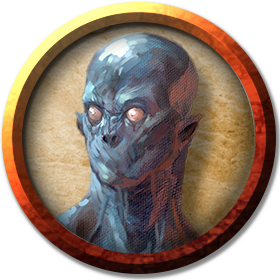

Doppelganger
Doppelgangers are devious shapeshifters that take on the appearance of other humanoids, throwing off pursuit or luring victims to their doom with misdirection and disguise. Few creatures spread fear, suspicion, and deceit better than doppelgangers. Found in every land and culture, they can take on the guise of any individual of any race.
Stealing Secrets. A doppelganger's adopted form allows it to blend into almost any group or community, but its transformation doesn't impart languages, mannerisms, memory, or personality. Doppelgangers often follow or capture creatures they intend to impersonate, studying them and probing their minds for secrets. A doppelganger can read a creature's surface thoughts, allowing it to glean that creature's name, desires, and fears, along with a few scattered memories. A doppelganger impersonating a specific creature as part of a long-term plot might keep its double alive and close at hand for weeks, probing the victim's mind daily to learn how to behave and speak authentically.
Hedonistic Swindlers. Doppelgangers work alone or in small groups, with group roles shifting from con to con. While one doppelganger takes the place of a murdered merchant or noble, the others take on a number of identities as circumstances warrant, playing the parts of family or servants while they live off the victim's riches.
Changelings. Doppelgangers are too lazy or self-interested to raise their young. They assume attractive male forms and seduce women, leaving them to raise their progeny. A doppelganger child appears to be a normal member of its mother's species until it reaches adolescence, at which point it discovers its true nature and is driven to seek out its kind to join them.
Environment
(FIXME)
Token

Doppelganger
Medium monstrosity (shapechanger), neutral
- Armor Class 14
- Hit Points 52 (8d8 + 16)
- Speed 30 ft.
STR DEX CON INT WIS CHA 11 (+0) 18 (+4) 14 (+2) 11 (+0) 12 (+1) 14 (+2)
- Proficiency Bonus +2
- Saving Throws
- Damage Vulnerabilities
- Damage Resistances
- Damage Immunities
- Condition Immunities charmed
- Skills Deception +6,Insight +3
- Senses darkvision 60 ft.,passive Perception 11
- Languages Common
- Challenge 3
Shapechanger. The doppelganger can use its action to polymorph into a Small or Medium humanoid it has seen, or back into its true form. Its statistics, other than its size, are the same in each form. Any equipment it is wearing or carrying isn't transformed. It reverts to its true form if it dies.
Ambusher. In the first round of a combat, the doppelganger has advantage on attack rolls against any creature it surprised.
Surprise Attack. If the doppelganger surprises a creature and hits it with an attack during the first round of combat, the target takes an extra 10 (3d6) damage from the attack.
Actions
Multiattack. The doppelganger makes two melee attacks.
Slam. Melee Weapon Attack: +6 to hit, reach 5 ft., one target. Hit: 7 (1d6 + 4) bludgeoning damage.
Read Thoughts. The doppelganger magically reads the surface thoughts of one creature within 60 feet of it. The effect can penetrate barriers, but 3 feet of wood or dirt, 2 feet of stone, 2 inches of metal, or a thin sheet of lead blocks it. While the target is in range, the doppelganger can continue reading its thoughts, as long as the doppelganger's concentration isn't broken (as if concentrating on a spell). While reading the target's mind, the doppelganger has advantage on Wisdom (Insight) and Charisma (Deception, Intimidation, and Persuasion) checks against the target.